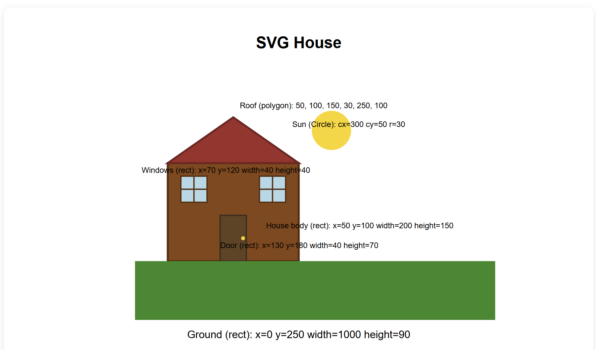
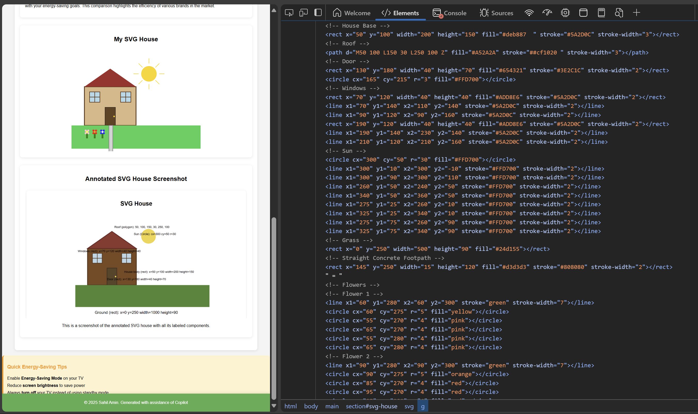

Welcome to the Energy Consumption Website
Discover energy-efficient appliances and learn how to reduce electricity consumption in the Australian market.
Energy Consumption Trends

This graph illustrates the average power consumption of televisions based on their screen size, helping consumers make informed decisions about energy-efficient models.
Size vs Power Consumption
This graph provides a detailed comparison of television screen sizes and their corresponding power consumption, enabling consumers to evaluate how screen dimensions influence energy usage.
Power Consumption vs Brand

This graph compares the average power consumption of different television brands, helping consumers identify energy-efficient brands. Understanding how brands differ in power consumption can guide you in selecting a television that aligns with your energy-saving goals. This comparison highlights the efficiency of various brands in the market.
My SVG House
Annotated SVG House Screenshot

DOM Screenshot
